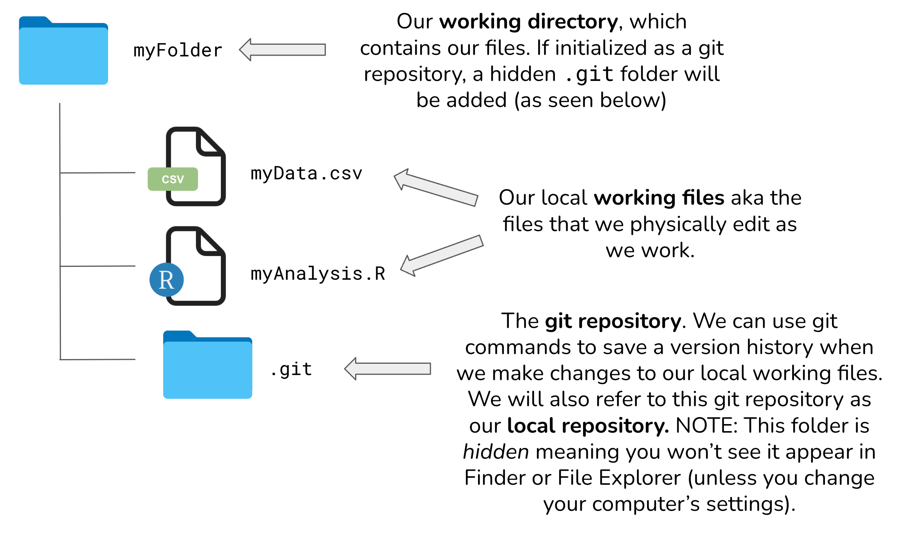
Missed the training?
Link will be added after the training.
Learning Objectives
- Apply the principles of Git to track and manage changes of a project
- Utilize the Git workflow including pulling changes, staging modified files, committing changes, pulling again to incorporate remote changes, and pushing changes to a remote repository
- Create and configure a Git repository and clone to RStudio
5.1 Introduction to Version Control

Every file in the scientific process changes. Manuscripts are edited. Figures get revised. Code gets fixed when bugs are discovered. Sometimes those fixes lead to even more bugs, leading to more changes in the code base. Data files get combined together. Sometimes those same files are split and combined again. In just one research project, we can expect thousands of changes to occur.
These changes are important to track, and yet, we often use simplistic file names to do so. Many of us have experienced renaming a document or script multiple times with the disingenuous addition of “final” to the file name (like the comic above demonstrates).
You might think there is a better way, and you’d be right: version control. Version control provides an organized and transparent way to track changes in code and additional files. This practice was designed for software development, but is easily applicable to scientific programming.
There are many benefits to using a version control software including:
- Maintain a history of your research project’s development while keeping your workspace clean
- Facilitate collaboration and transparency when working on teams
- Explore bugs or new features without disrupting your team members’ work
- and more!
The version control system we’ll be diving into is Git, the most widely used modern version control system in the world.
5.2 Introduction to Git + GitHub
Before diving into the details of Git and how to use it, let’s start with a motivating example that’s representative of the types of problems Git can help us solve.
5.2.1 A Motivating Example
Say, for example, you’re working on an analysis in R and you’ve got it into a state you’re pretty happy with. We’ll call this version 1:
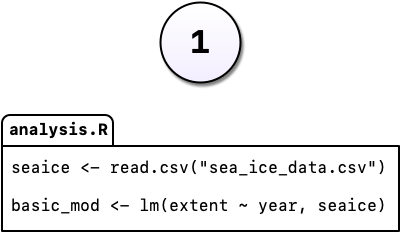
You come into the office the following day and you have an email from your boss, “Hey, you know what this model needs?”
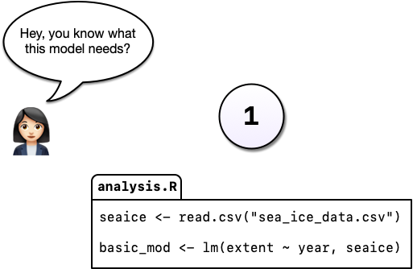
You’re not entirely sure what she means but you figure there’s only one thing she could be talking about: more cowbell. So you add it to the model in order to really explore the space.
But you’re worried about losing track of the old model so, instead of editing the code in place, you comment out the old code and put as serious a warning as you can muster in a comment above it.

Commenting out code you don’t want to lose is something probably all of us have done at one point or another but it’s really hard to understand why you did this when you come back years later or you when you send your script to a colleague. Luckily, there’s a better way: Version control. Instead of commenting out the old code, we can change the code in place and tell Git to commit our change. So now we have two distinct versions of our analysis and we can always see what the previous version(s) look like.

You may have noticed something else in the diagram above: Not only can we save a new version of our analysis, we can also write as much text as we like about the change in the commit message. In addition to the commit message, Git also tracks who, when, and where the change was made.
Imagine that some time has gone by and you’ve committed a third version of your analysis, version 3, and a colleague emails with an idea: What if you used machine learning instead?

Maybe you’re not so sure the idea will work out and this is where a tool like Git shines. Without a tool like Git, we might copy analysis.R to another file called analysis-ml.R which might end up having mostly the same code except for a few lines. This isn’t particularly problematic until you want to make a change to a bit of shared code and now you have to make changes in two files, if you even remember to.
Instead, with Git, we can start a branch. Branches allow us to confidently experiment on our code, all while leaving the old code in tact and recoverable.

So you’ve been working in a branch and have made a few commits on it and your boss emails again asking you to update the model in some way. If you weren’t using a tool like Git, you might panic at this point because you’ve rewritten much of your analysis to use a different method but your boss wants change to the old method.

But with Git and branches, we can continue developing our main analysis at the same time as we are working on any experimental branches. Branches are great for experiments but also great for organizing your work generally.

After all that hard work on the machine learning experiment, you and your colleague could decide to scrap it. It’s perfectly fine to leave branches around and switch back to the main line of development but we can also delete them to tidy up.

If, instead, you and your colleague had decided you liked the machine learning experiment, you could also merge the branch with your main development line. Merging branches is analogous to accepting a change in Word’s Track Changes feature but way more powerful and useful.

A key takeaway here is that Git can drastically increase your confidence and willingness to make changes to your code and help you avoid problems down the road. Analysis rarely follows a linear path and we need a tool that respects this.

Finally, imagine that, years later, your colleague asks you to make sure the model you reported in a paper you published together was actually the one you used. Another really powerful feature of Git is tags which allow us to record a particular state of our analysis with a meaningful name. In this case, we are lucky because we tagged the version of our code we used to run the analysis. Even if we continued to develop beyond commit 5 (above) after we submitted our manuscript, we can always go back and run the analysis as it was in the past.
With Git we can enhance our workflow:
- Eliminate the need for cryptic filenames and comments to track our work.
- Provide detailed descriptions of our changes through commits, making it easier to understand the reasons behind code modifications.
- Work on multiple branches simultaneously, allowing for parallel development, and optionally merge them together.
- Use commits to access and even execute older versions of our code.
- Assign meaningful tags to specific versions of our code.
- Additionally, Git offers a powerful distributed feature. Multiple individuals can work on the same analysis concurrently on their own computers, with the ability to merge everyone’s changes together.
5.2.2 What exactly are Git and GitHub?
Git:
- an open-source distributed version control software
- designed to manage the versioning and tracking of source code files and project history
- operates locally on your computer, allowing you to create repositories, and track changes
- provides features such as committing changes, branching and merging code, reverting to previous versions, and managing project history
- works directly with the files on your computer and does not require a network connection to perform most operations
- primarily used through the command-line interface (CLI, e.g. Terminal), but also has various GUI tools available (e.g. RStudio IDE)
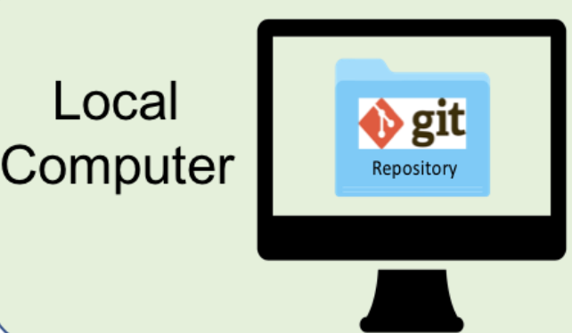
GitHub:
- online platform and service built around Git
- provides a centralized hosting platform for Git repositories
- allows us to store, manage, and collaborate on their Git repositories in the cloud
- offers additional features on top of Git, such as a web-based interface, issue tracking, project management tools, pull requests, code review, and collaboration features
- enables easy sharing of code with others, facilitating collaboration and contribution to open source projects
- provides a social aspect, allowing users to follow projects, star repositories, and discover new code
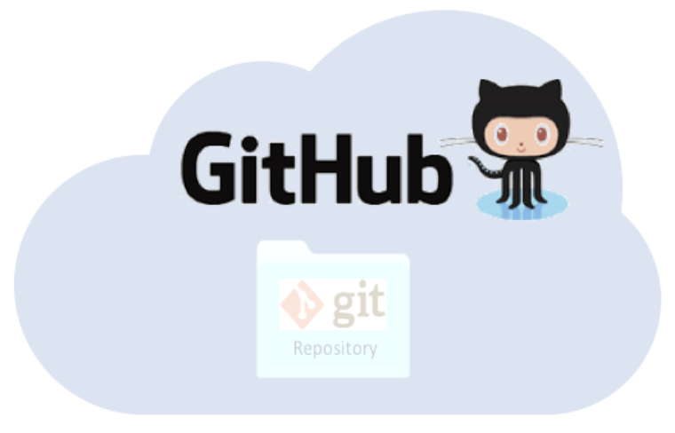
5.2.3 Understanding how local working files, Git, and GitHub all work together
It can be a bit daunting to understand all the moving parts of the Git / GitHub life cycle (i.e. how file changes are tracked locally within repositories, then stored for safe-keeping and collaboration on remote repositories, then brought back down to a local machine(s) for continued development). It gets easier with practice, but we’ll explain (first in words, then with an illustration) at a high-level how things work:
5.2.3.1 What is the difference between a “normal” folder vs. a Git repository
Whether you’re a Mac or a PC user, you’ll likely have created a folder at some point in time for organizing files. Let’s pretend that we create a folder, called myFolder/, and add two files: myData.csv and myAnalysis.R. The contents of this folder are not currently version controlled – meaning, for example, that if we make some changes to myAnalysis.R that don’t quite work out, we have no way of accessing or reverting back to a previous version of myAnalysis.R (without remembering/rewriting things, of course).
Git allows you to turn any “normal” folder, like myFolder/, into a Git repository – you’ll often see/hear this referenced as “initializing a Git repository”. When you initialize a folder on your local computer as a Git repository, a hidden .git/ folder is created within that folder (e.g. myFolder/.git/) – this .git/ folder is the Git repository. As you use Git commands to capture versions or “snapshots” of your work, those versions (and their associated metadata) get stored within the .git/ folder. This allows you to access and/or recover any previous versions of your work. If you delete .git/, you delete your project’s history.
Here is our example folder / Git repository represented visually:
5.2.3.2 How do I actually tell Git to preserve versions of my local working files?
Git was built as a command-line tool, meaning we can use Git commands in the command line (e.g. Terminal, Git Bash, etc.) to take “snapshots” of our local working files through time. Alternatively, RStudio provides buttons that help to easily execute these Git commands.
Generally, that workflow looks something like this:
- Make changes to a file(s) (e.g.
myAnalysis.R) in your working directory. - Stage the file(s) using
git add myAnalysis.R(orgit add .to stage multiple changed files at once). This lets Git know that you’d like to include the file(s) in your next commit. - Commit the file(s) using
git commit -m "a message describing my changes". This records those changes (along with a descriptive message) as a “snapshot” or version in the local repository (i.e. the.git/folder).
5.2.3.3 My versioned work is on my local computer, but I want to send it to GitHub. How?
The last step is synchronizing the changes made to our local repository with a remote repository (oftentimes, this remote repository is stored on GitHub). The git push command is used to send local commits up to a remote repository. The git pull command is used to fetch changes from a remote repository and merge them into the local repository – pulling will become a regular part of your workflow when collaborating with others, or even when working alone but on different machines (e.g. a laptop at home and a desktop at the office).
The processes described in the above sections (i.e. making changes to local working files, recording “snapshots” of them to create a versioned history of changes in a local Git repository, and sending those versions from our local Git repository to a remote repository (which is oftentimes on GitHub)) is illustrated using islands, buildings, bunnies, and packages in the artwork, below:
A basic git workflow represented as two islands, one with “local repo” and “working directory”, and another with “remote repo.” Bunnies move file boxes from the working directory to the staging area, then with Commit move them to the local repo. Bunnies in rowboats move changes from the local repo to the remote repo (labeled “PUSH”) and from the remote repo to the working directory (labeled “PULL”).

5.2.4 Let’s Look at a GitHub Repository
This screen shows the copy of a repository stored on GitHub, with its list of files, when the files and directories were last modified, and some information on who made the most recent changes.

If we drill into the “commits” for the repository, we can see the history of changes made to all of the files. Looks like kellijohnson was working on the project and fixing errors in December:

And finally, if we drill into one of the changes made on December 20, we can see exactly what was changed in each file:
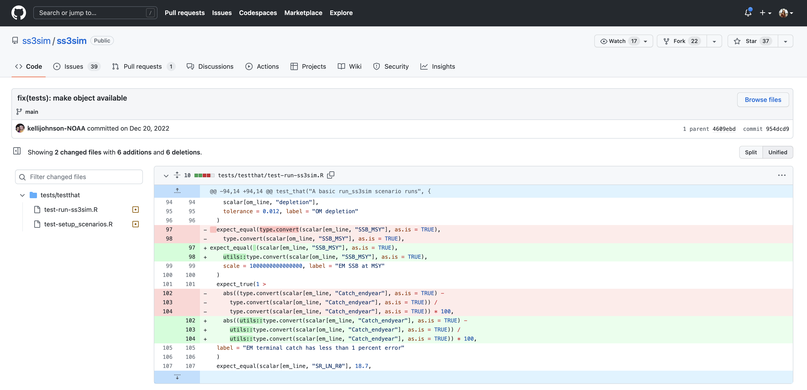
Tracking these changes, how they relate to released versions of software and files is exactly what Git and GitHub are good for. And we will show how they can really be effective for tracking versions of scientific code, figures, and manuscripts to accomplish a reproducible workflow.
5.2.5 Git Vocabulary & Commands
We know the world of Git and GitHub can be daunting. Use these tables as references while you use Git and GitHub, and we encourage you to build upon this list as you become more comfortable with these tools.
This table contains essential terms and commands that complement intro to Git skills. They will get you far on personal and individual projects.
| Term | Git Command(s) | Definition |
|---|---|---|
| Add/Stage | git add [file] |
Staging marks a modified file in its current version to go into your next commit snapshot. You can also stage all modified files at the same time using git add . |
| Commit | git commit |
Records changes to the repository. |
| Commit Message | git commit -m "my commit message" |
Records changes to the repository and include a descriptive message (you should always include a commit message!). |
| Fetch | git fetch |
Retrieves changes from a remote repository but does not merge them into your local working file(s). |
| Pull | git pull |
Retrieves changes from a remote repository and merges them into your local working file(s). |
| Push | git push |
Sends local commits to a remote repository. |
| Status | git status |
Shows the current status of the repository, including (un)staged files and branch information. |
This table includes more advanced Git terms and commands that are commonly used in both individual and collaborative projects.
| Term | Git Command(s) | Definition |
|---|---|---|
| Branch | git branch |
Lists existing branches or creates a new branch. |
| Checkout | git checkout [branch] |
Switches to a different branch or restores files from a specific commit. |
| Clone | git clone [repository] |
Creates a local copy of a remote repository. |
| Diff | git diff |
Shows differences between files, commits, or branches. |
| Fork | - | Creates a personal copy of a repository under your GitHub account for independent development. |
| Log | git log |
Displays the commit history of the repository. |
| Merge | git merge [branch] |
Integrates changes from one branch into another branch. |
| Merge Conflict | - | Occurs when Git cannot automatically merge changes from different branches, requiring manual resolution. |
| Pull Request (PR) | - | A request to merge changes from a branch into another branch, typically in a collaborative project. |
| Rebase | git rebase |
Integrates changes from one branch onto another by modifying commit history. |
| Remote | git remote |
Manages remote repositories linked to the local repository. |
| Repository | git init |
A directory where Git tracks and manages files and their versions. |
| Stash | git stash |
Temporarily saves changes that are not ready to be committed. |
| Tag | git tag |
Assigns a label or tag to a specific commit. |
Git has a rich set of commands and features, and there are many more terms beyond either table. Learn more by visiting the git documentation.
5.3 Exercise 1: Create a remote repository on GitHub
Setup
- Login to GitHub
- Click the New repository button
- Name it
{FIRSTNAME}_test - Add a short description
- Check the box to add a
README.mdfile - Add a
.gitignorefile using theRtemplate - Set the
LICENSEto Apache 2.0
If you were successful, it should look something like this:

You’ve now created your first repository! It has a couple of files that GitHub created for you: README.md, LICENSE, and .gitignore.
README.md files are used to share important information about your repository
You should always add a README.md to the root directory of your repository – it is a markdown file that is rendered as HTML and displayed on the landing page of your repository. This is a common place to include any pertinent information about what your repository contains, how to use it, etc.

For simple changes to text files, such as the README.md, you can make edits directly in the GitHub web interface.
Challenge
Navigate to the README.md file in the file listing, and edit it by clicking on the pencil icon (top right of file). This is a regular Markdown file, so you can add markdown text. Add a new level-2 header called “Purpose” and add some bullet points describing the purpose of the repo. When done, add a commit message, and hit the Commit changes button.
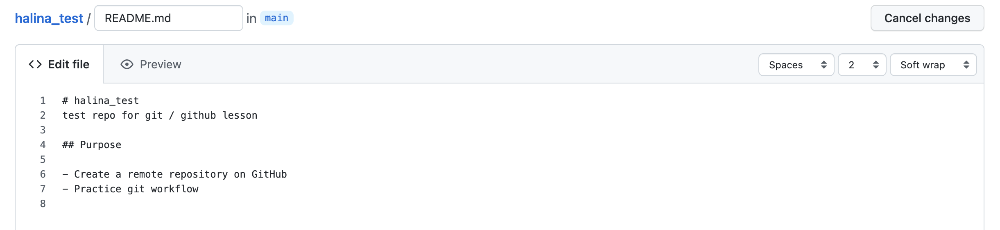
Congratulations, you’ve now authored your first versioned commit! If you navigate back to the GitHub page for the repository, you’ll see your commit listed there, as well as the rendered README.md file.

The GitHub repository landing page provides us with lots of useful information. To start, we see:
- all of the files in the remote repository
- when each file was last edited
- the commit message that was included with each file’s most recent commit (which is why it’s important to write good, descriptive commit messages!)
Additionally, the header above the file listing shows the most recent commit, along with its commit message, and a unique ID (assigned by Git) called a SHA. The SHA (aka hash) identifies the specific changes made, when they were made, and by who. If you click on the SHA, it will display the set of changes made in that particular commit.
5.4 Exercise 2: clone your repository and use Git locally in RStudio
Currently, our repository just exists on GitHub as a remote repository. It’s easy enough to make changes to things like our README.md file (as demonstrated above), from the web browser, but that becomes a lot harder (and discouraged) for scripts and other code files. In this exercise, we’ll bring a copy of this remote repository down to our local computer (aka clone this repository) so that we can work comfortably in RStudio.
An important distinction
We refer to the remote copy of the repository that is on GitHub as the origin repository (the one that we cloned from), and the copy on our local computer as the local repository.
Start by clicking the green Code button (top right of your file listing) and copying the URL to your clipboard (this URL represents the repository location):

RStudio makes working with Git and version controlled files easy – to do so, you’ll need to be working within an R project folder. The following steps will look similar to those you followed when first creating an R Project, with a slight difference. Follow the instructions in the Setup box below to clone your remote repository to your local computer in RStudio:
Setup
- Click File > New Project
- Select Version Control and paste the remote repository URL (which should be copied to your clipboard) in the Repository URL field
- Press Tab, which will auto-fill the Project directory name field with the same name as that of your remote repo – while you can name the local copy of the repository anything, it’s typical (and highly recommended) to use the same name as the GitHub repository to maintain the correspondence
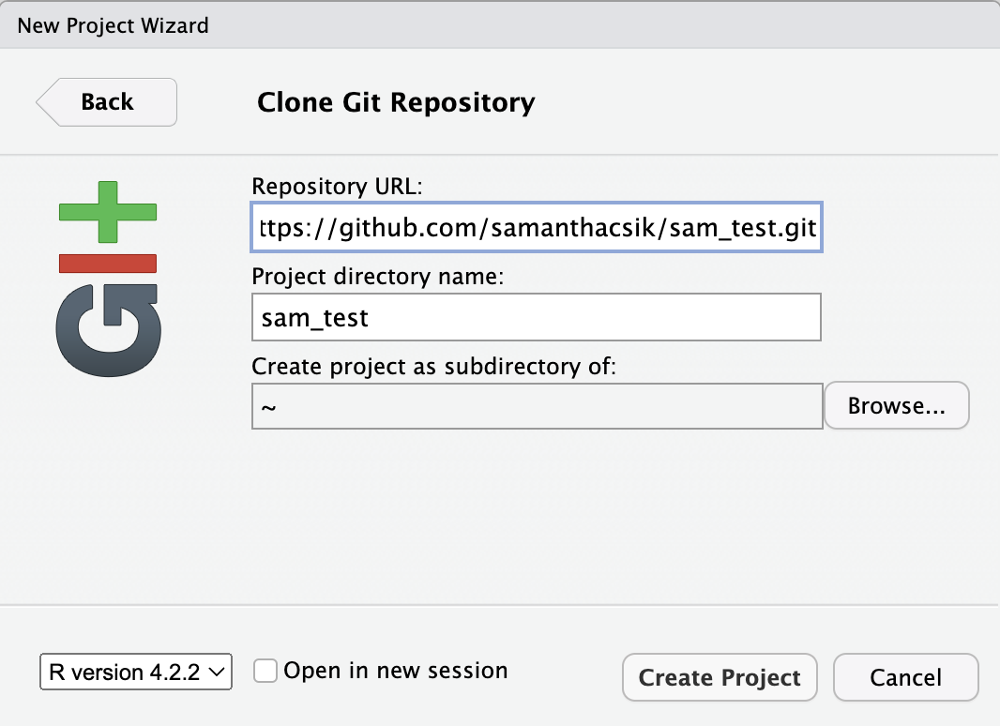
Once you click Create Project, a new RStudio window will open with all of the files from the remote repository copied locally. Depending on how your version of RStudio is configured, the location and size of the panes may differ, but they should all be present – you should see a Git tab, as well as the Files tab, where you can view all of the files copied from the remote repo to this local repo.
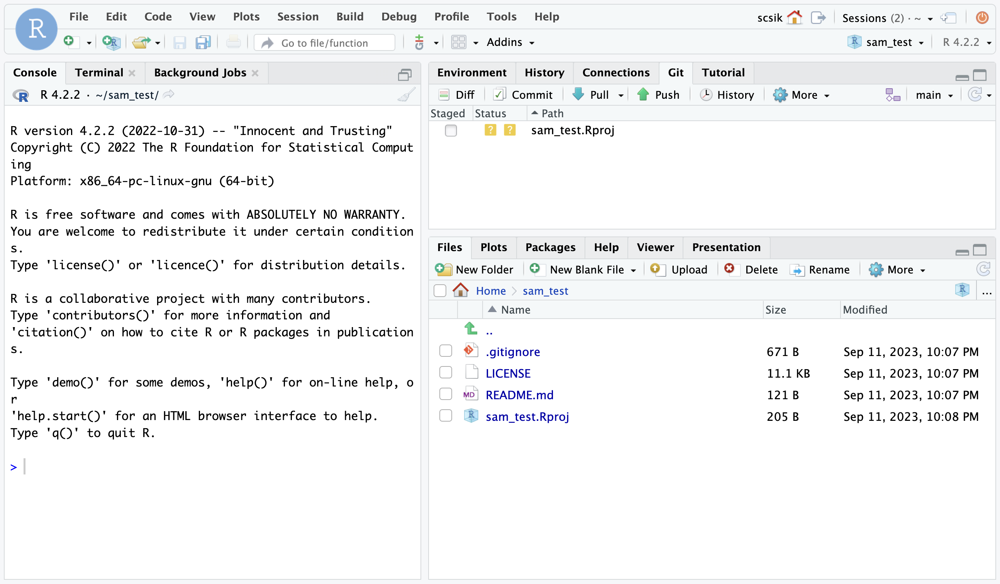
You’ll note that there is one new file sam_test.Rproj, and three files that we created earlier on GitHub (.gitignore, LICENSE, and README.md).
In the Git tab, you’ll note that the one new file, sam_test.Rproj, is listed. This Git tab is the status pane that shows the current modification status of all of the files in the repository. Here, we see sam_test.Rproj is preceded by a ?? symbol to indicate that the file is currently untracked by Git. This means that we have not yet committed this file using Git (i.e. Git knows nothing about the file; hang tight, we’ll commit this file soon so that it’s tracked by Git). As you make version control decisions in RStudio, these icons will change to reflect the current version status of each of the files.
Inspect the history. Click on the History button in the Git tab to show the log of changes that have occurred – these changes will be identical to what we viewed on GitHub. By clicking on each row of the history, you can see exactly what was added and changed in each of the two commits in this repository.
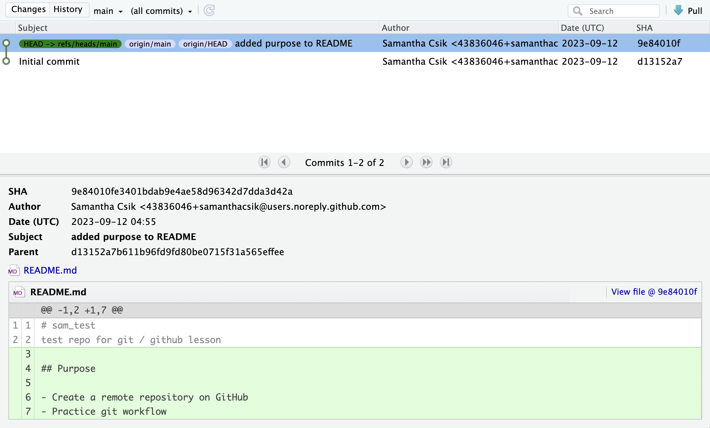
Challenge
- Make a change to the
README.mdfile – this time from RStudio – then commit theREADME.mdchange - Add a new section to your
README.mdcalled “Creator” using a level-2 header. Under it include some information about yourself. Bonus: Add some contact information and link your email using Markdown syntax.
Once you save, you’ll immediately see the README.md file show up in the Git tab, marked as a modification. Select the file in the Git tab, and click Diff to see the changes that you saved (but which are not yet committed to your local repository). Newly made changes are highlighted in green.
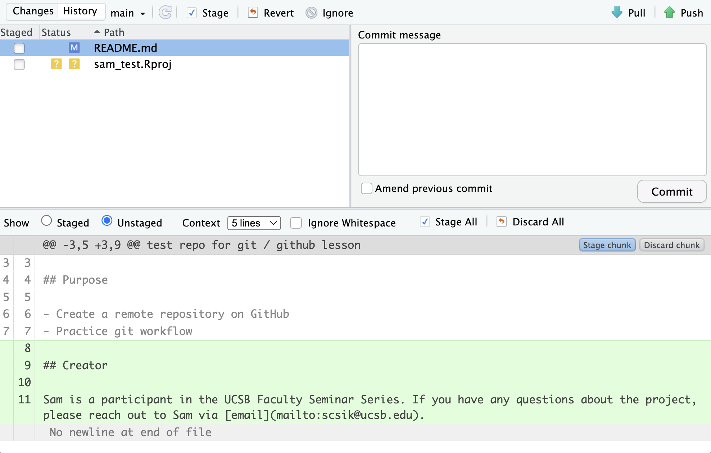
Commit the changes. To commit the changes you made to the README.md file using RStudio’s GUI (Graphical User Interface), rather than the command line:
- Stage (aka add)
README.mdby clicking the check box next to the file name – this tells Git which changes you want included in the commit and is analogous to using the git command,git add README.md, in the command line - Commit
README.mdby clicking the Commit button and providing a descriptive commit message in the dialog box. Press the Commit button once you’re satisfied with your message. This is analogous to using the git command,git commit -m "my commit message", in the command line.

A few notes about our local repository’s state:
- We still have a file,
sam_test.Rproj, that is listed as untracked (denoted by ?? in the Git tab). - You should see a message at the top of the Git tab that says,
Your branch is ahead of ‘origin/main’ by 1 commit., which tells us that we have 1 commit in the local repository, but that commit has not yet been pushed up to theoriginrepository (aka remote repository on GitHub).
Commit the remaining project file by staging/adding and committing it with an informative commit message.
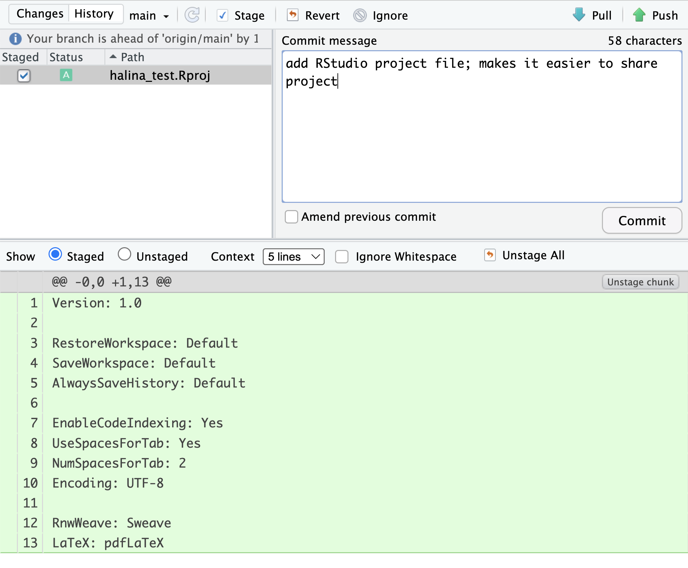
When finished, you’ll see that no changes remain in the Git tab, and the repository is clean.
Inspect the history. Note that under Changes, the message now says:
Your branch is ahead of ‘origin/main’ by 2 commits.
These are the two commits that we just made, but have not yet been pushed to GitHub.
Click on the History button to see a total of four commits in the local repository (the two we made directly to GitHub via the web browser and the two we made in RStudio).
Push these changes to GitHub. Now that we’ve made and committed changes locally, we can push those changes to GitHub using the Push button. This sends your changes to the remote repository (on GitHub) leaving your repository in a totally clean and synchronized state (meaning your local repository and remote repository should look the same).
If you are prompted to provide your GitHub username and password when Pushing…
it’s a good indicator that you did not set your GitHub Personal Access Token (PAT) correctly. You can redo the steps outlined in the GitHub Authentication section to (re)set your PAT, then Push again.
 <–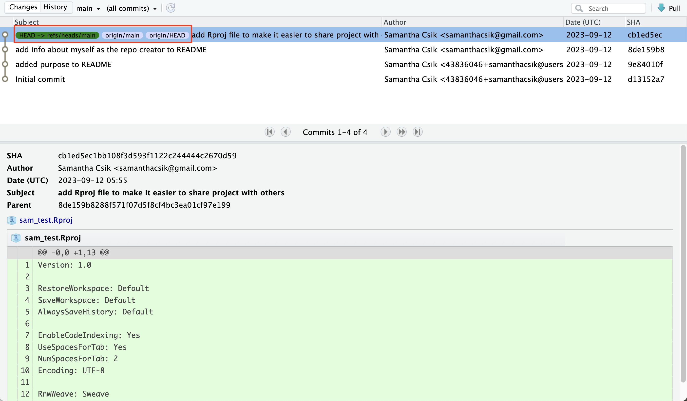–>
<–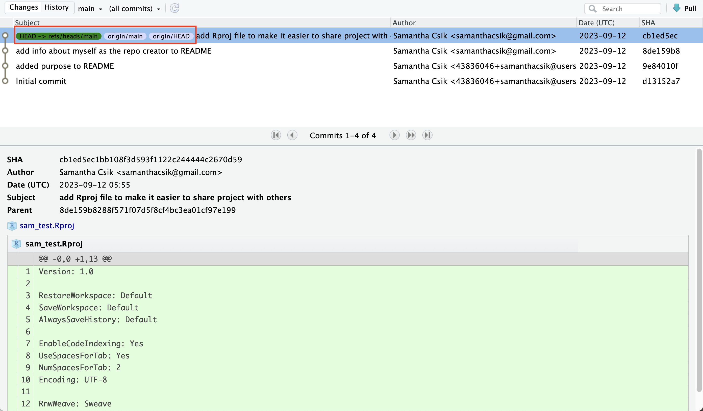–>
If you look at the History pane again, you’ll notice that the labels next to the most recent commit indicate that both the local repository (HEAD) and the remote repository (origin/HEAD) are pointing at the same version in the history. If we look at the commit history on GitHub, all the commits will be shown there as well.

5.5 Exercise 3: Setting up Git on an existing project
There are a number of different workflows for creating version-controlled repositories that are stored on GitHub. We started with Exercise 1 and Exercise 2 using one common approach: creating a remote repository on GitHub first, then cloning that repository to your local computer (you used your {FIRSTNAME}_test repo).
However, you may find yourself in the situation where you have an existing directory (i.e. a “normal” folder) of code that you want to make a Git repository out of, and then send it to GitHub. In this last exercise, we will practice this workflow using your training_{USERNAME} project.
First, switch to your training_{USERNAME} project using the RStudio project dropdown menu. The project drop down menu is in the upper right corner of your RStudio pane. Click the drop down next to your project name ({FIRSTNAME}_test), and then select the training_{USERNAME} project from the RECENT PROJECTS list.
There are a few approaches for turning an existing project folder into a Git repository, then sending it to GitHub – if you’re an R-user, the simplest way is to use the {usethis} package, which is built to automate tasks involved with project setup and development. However, you can also initialize a local git repository and set the remote repository from the command line (a language-agnostic workflow). Steps for both approaches are included below (demonstrated using your training_{USERNAME} project):
- Install the
{usethis}package (if you haven’t done so already) by running the following in your Console:
install.packages("usethis")- Initialize
training_{USERNAME}as a Git repository by runningusethis::use_git()in the Console. Choose yes when asked if it’s okay to commit any uncommitted files. Choose yes again if asked to restart R. Once complete, you should see the Git tab appear in your top left pane in RStudio and a.gitignorefile appear in your Files tab.
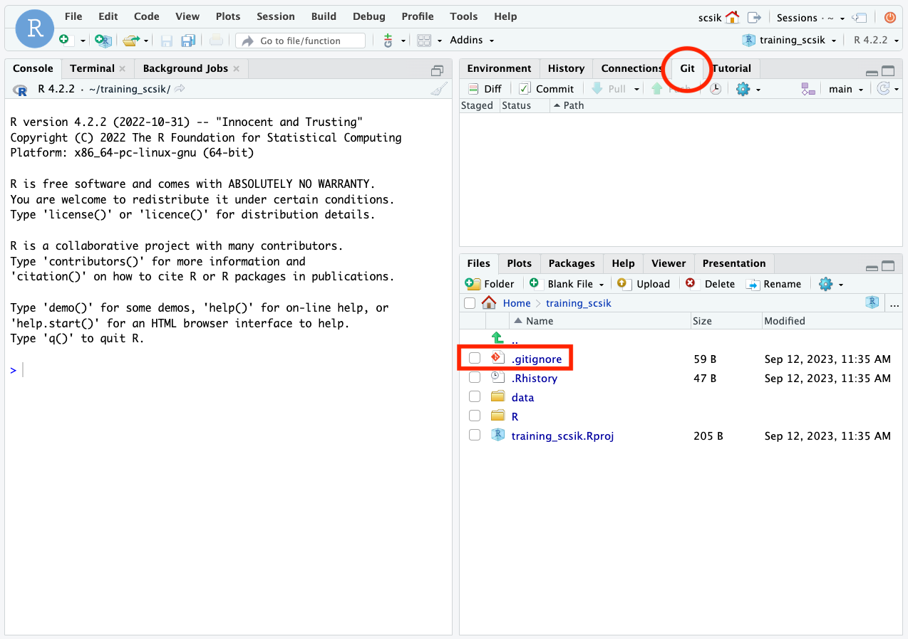
.gitignore files allow you to specify which files/folders you don’t want Git to track
A .gitignore file is automatically created in the root directory of your project when you initialize it as a Git repository. You’ll notice that there are already some R / R Project-specific files that have been added by default.
Why is this useful? For many reasons, but possibly the greatest use-case is adding large files (GitHub has a file size limit of 2 GB) or files with sensitive information (e.g. keys, tokens) that you don’t want to accidentally push to GitHub.
How do I do this? Let’s say I create a file with sensitive information that I don’t want to push to GitHub. I can add a line to my .gitignore file:
# added by default when I initalized my RProj as a Git Repository
.Rproj.user
.Rhistory
.Rdata
.httr-oauth
.DS_Store
.quarto
# add file so that it doesn't get pushed to the remote repo (on GitHub);
contains_sensitive_info.RIf this file is currently untracked by Git, it should appear in my Git tab. Once I add it to the .gitignore and save the modified .gitignore file, you should see contains_sensitive_info.R disappear from the Git tab, and a modified .gitignore (denoted by a blue M) appear. Stage/commit/push this modified .gitignore file.
- Create an upstream remote repository on GitHub by running
usethis::use_github()in the Console. Your web browser should open up to your new GitHub repository, with the same name as your local Git repo/R Project.
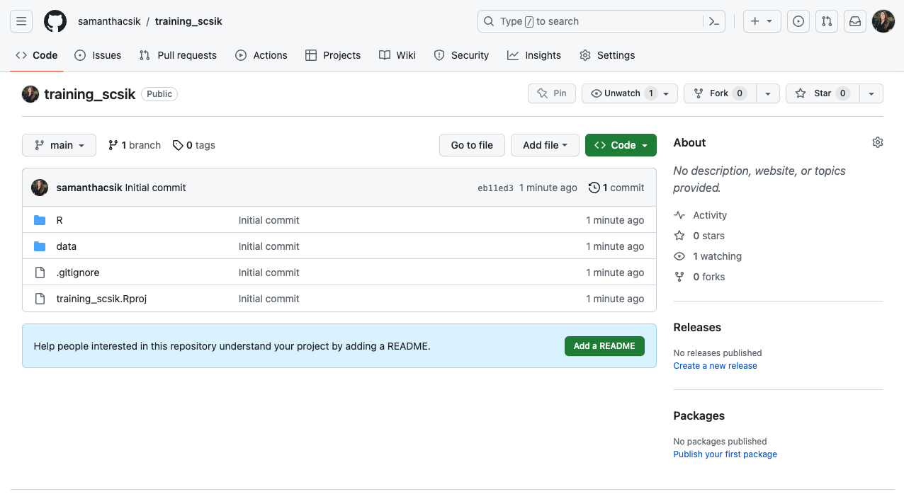
Ensure that your default branch is named
mainrather thanmasterby:- running
git branchin the Terminal to list all your branches (you should currently only have one, which is your default) - if it’s named
master, run the following line in the Console to update it
- running
usethis::git_default_branch_rename(from = "master", to = "main")You can verify that your update worked by running git branch once more in the Terminal.
Why are we doing this?
The racist “master” terminology for git branches motivates us to update our default branch to “main” instead.
There is a push across platforms and software to update this historical default branch name from master to main. GitHub has already done so – you may have noticed that creating a remote repository first (like we did in Exercises 1 & 2) results in a default branch named main. Depending on your version of Git, however, you may need to set update the name manually when creating a local git repository first (as we’re doing here).
- You’re now ready to edit, stage/add, commit, and push files to GitHub as practiced earlier!
While we’ll be using the RStudio Terminal here, you can use any command-line interface (e.g. Mac Terminal, Git Bash, etc.) that allows for git interactions (if you plan to use a command-line interface that is not the RStudio Terminal, make sure to navigate to your project directory (e.g. using cd file/path/to/project/directory) before initializing your repository.
- Initialize
training_{USERNAME}as a Git repository by runninggit initin the Terminal. You should get a message that says something like:
Initialized empty Git repository in /home/username/training_username/.git/
You may have to restart RStudio or close the project and reopenfor the Git tab to appear
You’ll likely need to help RStudio in recognizing that this R Project has been initialized as a git repository –
To Restart click Session > Restart R
Close and re-open project click File > Close Project once the project has been closed click File > Open Project > Navigate to the
.Rprojfile of the project you’d like to open.
Once complete, you should see the Git tab appear in your top left pane in RStudio and a .gitignore file appear in your Files tab.
.gitignore files allow you to specify which files/folders you don’t want Git to track
A .gitignore file is automatically created in the root directory of your project when you initialize it as a Git repository. You’ll notice that there are already some R / R Project-specific files that have been added by default.
Why is this useful? For many reasons, but possibly the greatest use-case is adding large files (GitHub has a file size limit of 2 GB) or files with sensitive information (e.g. keys, tokens) that you don’t want to accidentally push to GitHub.
How do I do this? Let’s say I create a file with sensitive information that I don’t want to push to GitHub. I can add a line to my .gitignore file:
# added by default when I initalized my RProj as a Git Repository
.Rproj.user
.Rhistory
.Rdata
.httr-oauth
.DS_Store
.quarto
# add file so that it doesn't get pushed to the remote repo (on GitHub);
contains_sensitive_info.RIf this file is currently untracked by Git, it should appear in my Git tab. Once I add it to the .gitignore and save the modified .gitignore file, you should see contains_sensitive_info.R disappear from the Git tab, and a modified .gitignore (denoted by a blue M) appear. Stage/commit/push this modified .gitignore file.
Ensure that your default branch is named
mainrather thanmasterby:- running
git branchin the Terminal to list all your branches (you should currently only have one, which is your default) - if it’s named
master, run the following line in the Terminal to update it
- running
# for Git version 2.28+ (check by running `git --version`)
# this sets the default branch name to `main` for any new repos moving forward
git config --global init.defaultBranch main
# for older versions of Git
# this sets the default branch name to `main` ONLY for this repo
git branch -m master mainYou can verify that your update worked by running git branch once more in the Terminal.
Why are we doing this?
The racist “master” terminology for git branches motivates us to update our default branch to “main” instead.
There is a push across platforms and software to update this historical default branch name from master to main. GitHub has already done so – you may have noticed that creating a remote repository first (like we did in Exercises 1 & 2) results in a default branch named main. Depending on your version of Git, however, you may need to set update the name manually when creating a local git repository first (as we’re doing here).
- Stage/Add your files. It’s helpful to first run
git statusto check the state of your local repository (particularly if you aren’t using RStudio / have access to a GUI with a Git tab-esque feature) – this will tell you which files have been modified or are untracked and that are currently unstaged (in red). What appears here should look just like what appears in the Git tab:
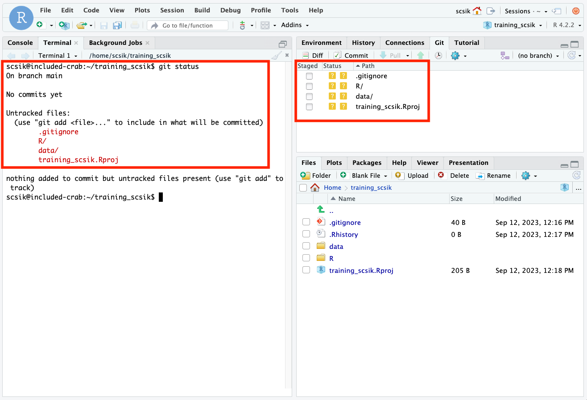
Run git add . in the Terminal to stage all files at once (or git add {FILENAME} to stage individual files). Running git status again will show you which files have been staged (in green). You may have to refresh your Git tab to see the change in state reflected in the GUI.

- Commit your files by running
git commit -m "an informative commit message"in the Terminal. Refreshing your Git tab will cause them to disappear (just as they do when you commit using RStudio’s GUI buttons). You can rungit login the Terminal to see a history of your past commits (currently, we only have this one).
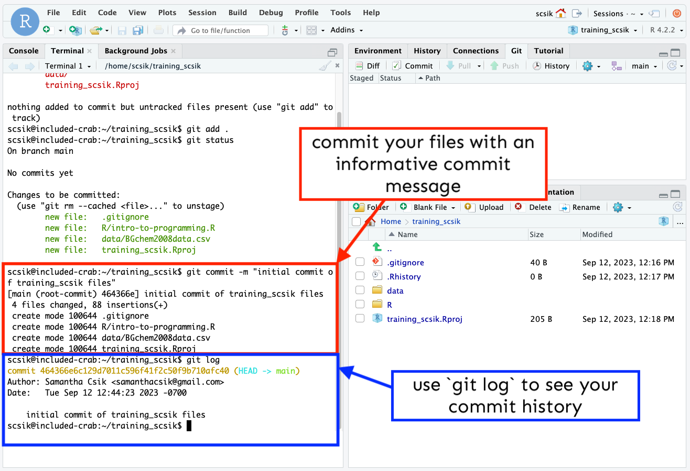
Create an empty remote repository by logging into GitHub and creating a new repository, following the same steps as in Exercise 1. IMPORTANTLY, DO NOT initialize your remote repo with a
READMElicense, or.gitignorefile – doing so now can lead to merge conflicts. We can add them after our local and remote repos are linked. Name your remote repository the same as your local repository (i.e.training_{USERNAME}).Link your remote (GitHub) repository to your local Git repository. Your empty GitHub repo conveniently includes instructions for doing so. Copy the code under push an existing repository from the command line to your clipboard, paste into your RStudio Terminal, and press return/enter.
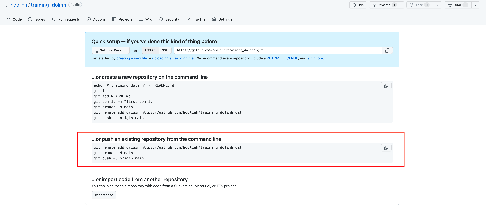
These commands do three things:
- Adds the GitHub repository as the remote repository (i.e. links your local repo to the remote repo)
- Renames the default branch to
main - Pushes the
mainbranch to the remote GitHub repository
Head back to your browser and refresh your GitHub repository page to see your files appear!
- You’re now ready to edit, stage/add, commit, and push files to GitHub as practiced earlier!
5.6 Go further with Git
There’s a lot we haven’t covered in this brief tutorial. There are some great and much longer tutorials that cover advanced topics, such as:
- Using Git on the command line
- Resolving conflicts
- Branching and merging
- Pull requests versus direct contributions for collaboration
- Using
.gitignoreto protect sensitive data - GitHub Issues - how to use them for project management and collaboration
and much, much more.
5.7 Git resources
- Pro Git Book
- Happy Git and GitHub for the useR
- GitHub Documentation
- Learn Git Branching is an interactive tool to learn Git on the command line
- Software Carpentry Version Control with Git
- Bitbucket’s tutorials on Git Workflows